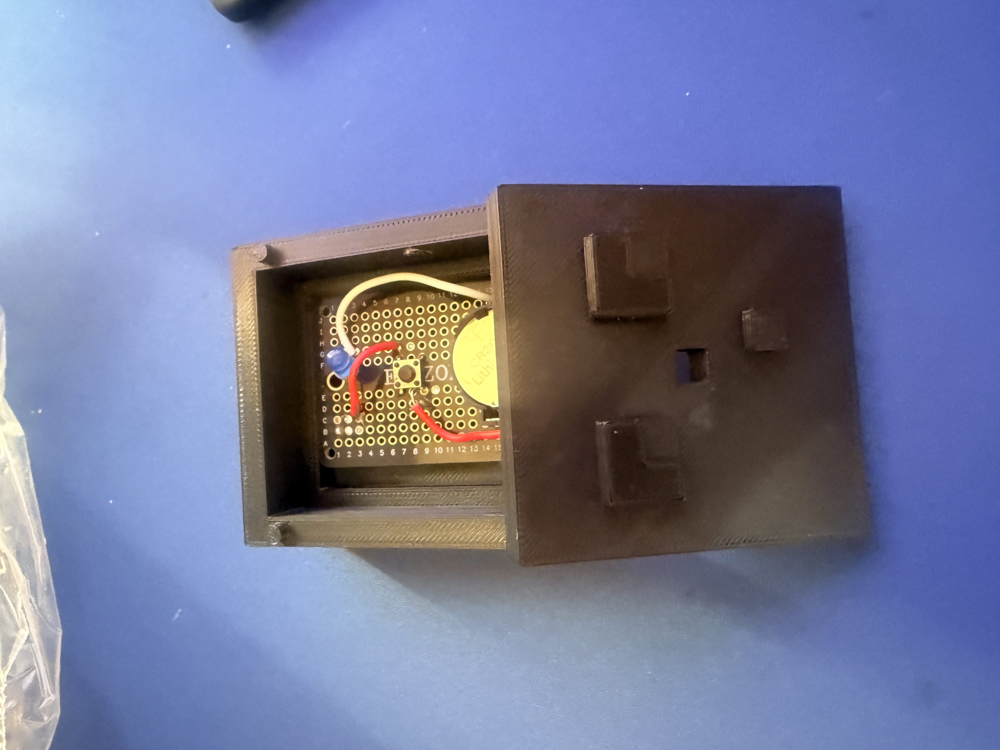
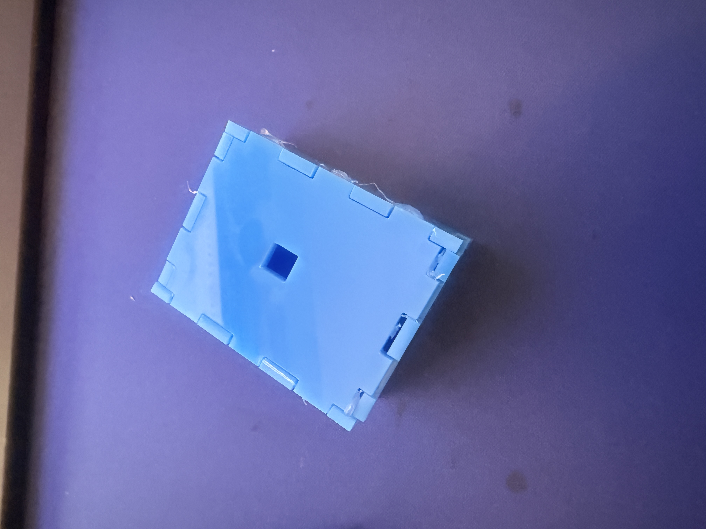
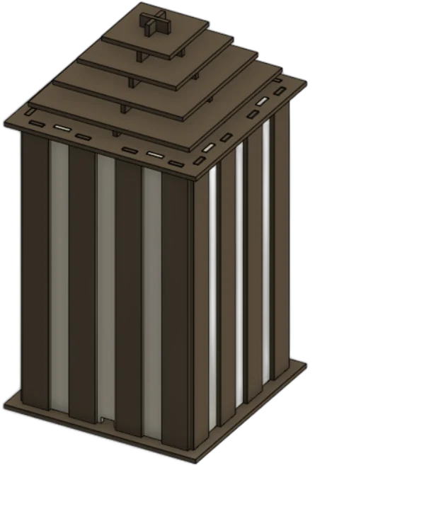
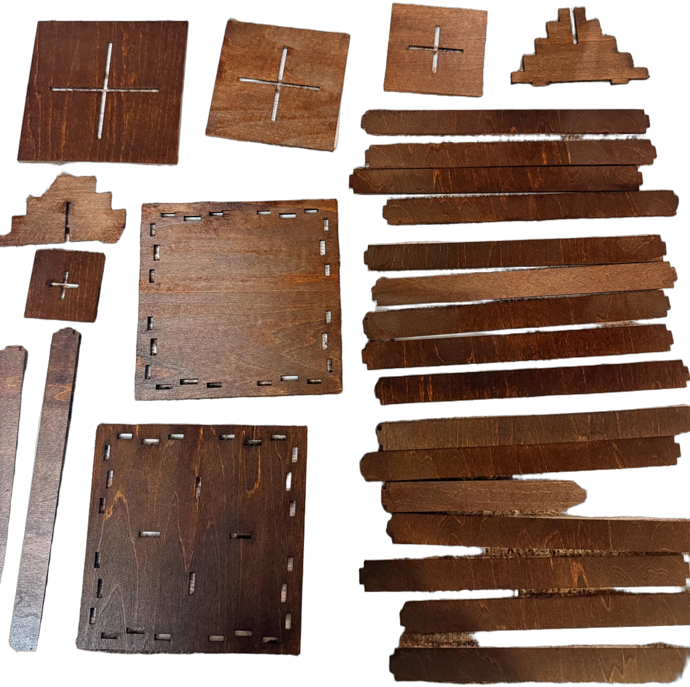
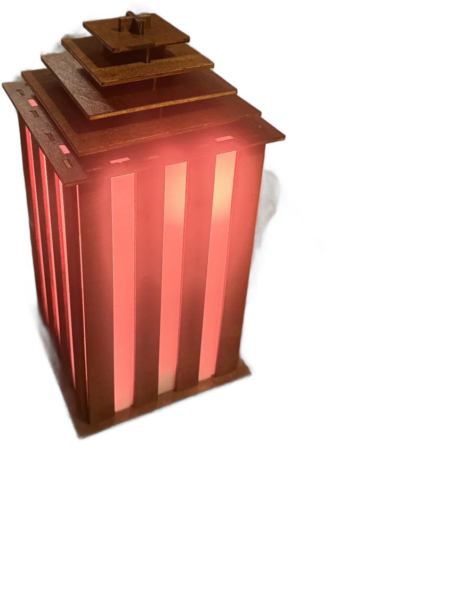

Technology Tinder
3 Pet Peeves
01
Flipping bacon
Standing at the stove flipping bacon keeps me stuck downstairs when I'd rather be getting ready upstairs.
Idea Something that cooks and flips the bacon on its own, so it's done by the time I come down.
02
A freezing room in the morning
My room is freezing when I wake up because the AC runs all night.
Idea A button that physically presses my AC remote to shut it off around 6 AM, so the room warms up before my alarm.
03
Dirty counters
Wiping down the kitchen counters is a constant, tedious chore.
Idea A little "Zamboni" for the countertop — a small robot that drives across the surface and cleans it on its own.
Motor Buffet
Enclosures


Chair, Bag & Lamp
Chair
Bag
Lamp


